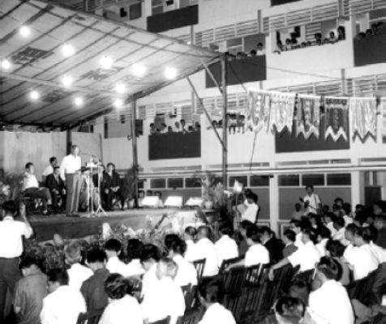
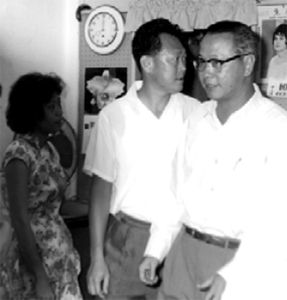

HDB Chairman Lim Kim San speaking at the completion ceremony of HDB flats at Cantonment Road on 10 April 1964. I was seated behind him.

Kim San and me inside a newly occupied three-room flat that evening of 10 April, then a poorer Singapore.